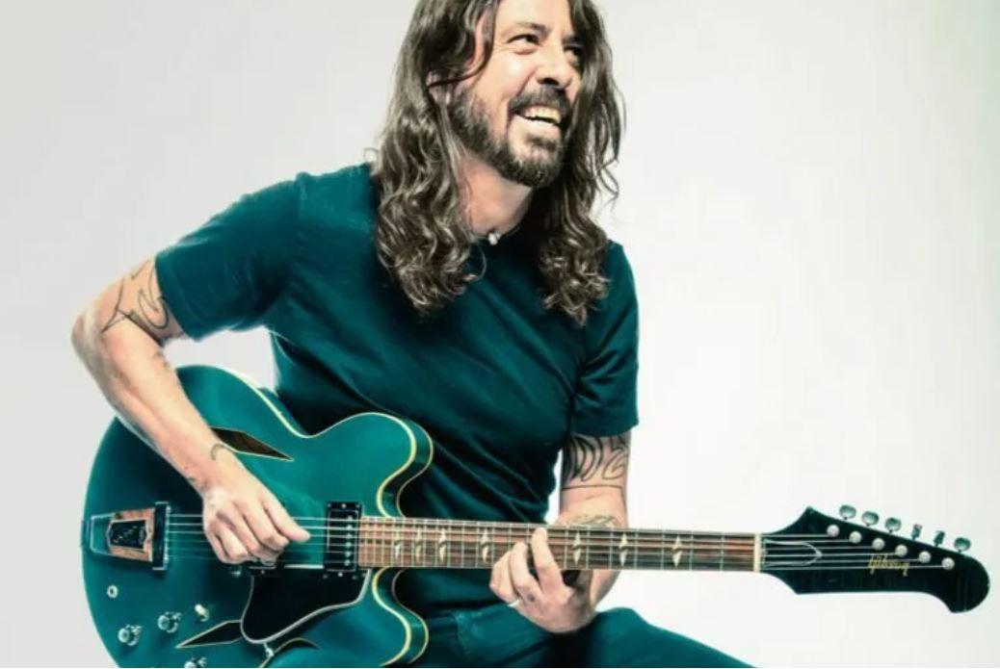

Biography
David Eric Grohl was born in Warren, Ohio, on January 14, 1969. He formed his first band at age 10. He dropped out of high school to play with the hardcore group Scream before auditioning for Nirvana. Nirvana went on to be an international hit and they ended up signing with Geffen Records. Their first release with them, 1991’s Nevermind, became a huge hit, driven in part by the single, “Smells Like Teen Spirit.” While Cobain handled most of the songwriting duties, all three band members had worked on the track, which combined elements of punk, metal and pop. After singer Kurt Cobain's death, Grohl formed a commercially successful alternative band called the Foo Fighters. The first Foo Fighters album as a band, The Colour and the Shape, came out in 1997. The album made it to the top ten of the album charts and featured such tracks as “Monkey Wrench,” “Everlong” and “My Hero.” Repeating this feat with 1999’s There Is Nothing Left to Lose, the Foo Fighters won their first Grammy Award for Best Rock Album in 2000. The album had one breakaway single in “Learn to Fly,” and the video for the song won the group their first Grammy Award in 2000 for Best Short Form Music Video. Over the years, Grohl has recorded with other bands, including Queens of the Stone Age and Tenacious D, but he continues to circle back to the Foo Fighters. The group has since released Wasting Light (2011), Sonic Highways (2014), Concrete and Gold (2017) and Medicine at Midnightem> (2021). "Run" off Concrete and Gold claimed best rock song at the Grammys in 2018. Medicine at Midnight won best rock album, best song with "Waiting for a War" and best rock performance with "Making a Fire" in 2022.
Quotes
The human element of making music is what’s most important.
Cause when you’re sequencing a record, you want the listener to stick with it from beginning to end, and in order to do that, you really have to map out the journey from the first song to the last.
Singing into a microphone and learning to play an instrument, learning to do your craft, that’s the most important thing! It’s not about what goes on in a computer!
| Studio Album Number | Studio Album Name | Release Date | Most Popular Song |
|---|---|---|---|
| 1st | Foo Fighters | July 4th, 1995 | This Is a Call |
| 2nd | The Colour and the Shape | May 20th, 1997 | Everlong |
| 3rd | There Is Nothing Left to Lose | November 2nd, 1999 | Learn to Fly |
| 4th | One by One | October 22nd, 2002 | All My Life |
| 5th | In Your Honor | June 14th, 2005 | Best of You |
| 6th | Echoes, Silence, Patience & Grace | September 25th, 2007 | The Pretender |
| 7th | Wasting Light | April 12th, 2011 | Rope |
| 8th | Sonic Highways | November 10th, 2014 | Something from Nothing |
| 9th | Concrete and Gold | September 15th, 2017 | Run |
| 10th | Medicine at Midnight | February 5th, 2021 | Shame Shame |
| 11th | But Here We Are | June 2nd, 2023 | Rescued |